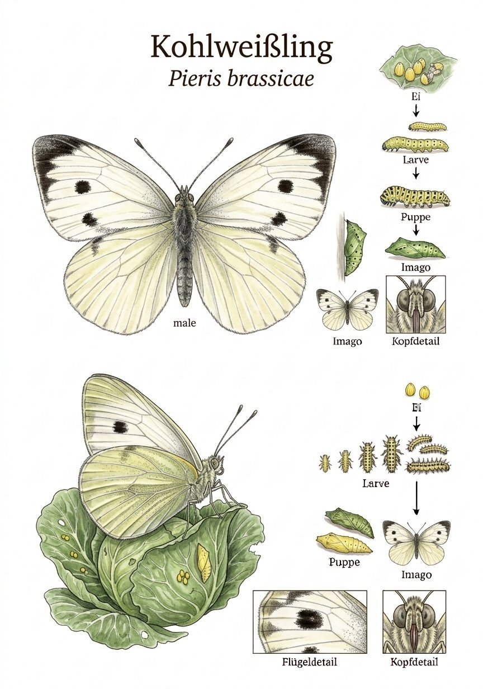
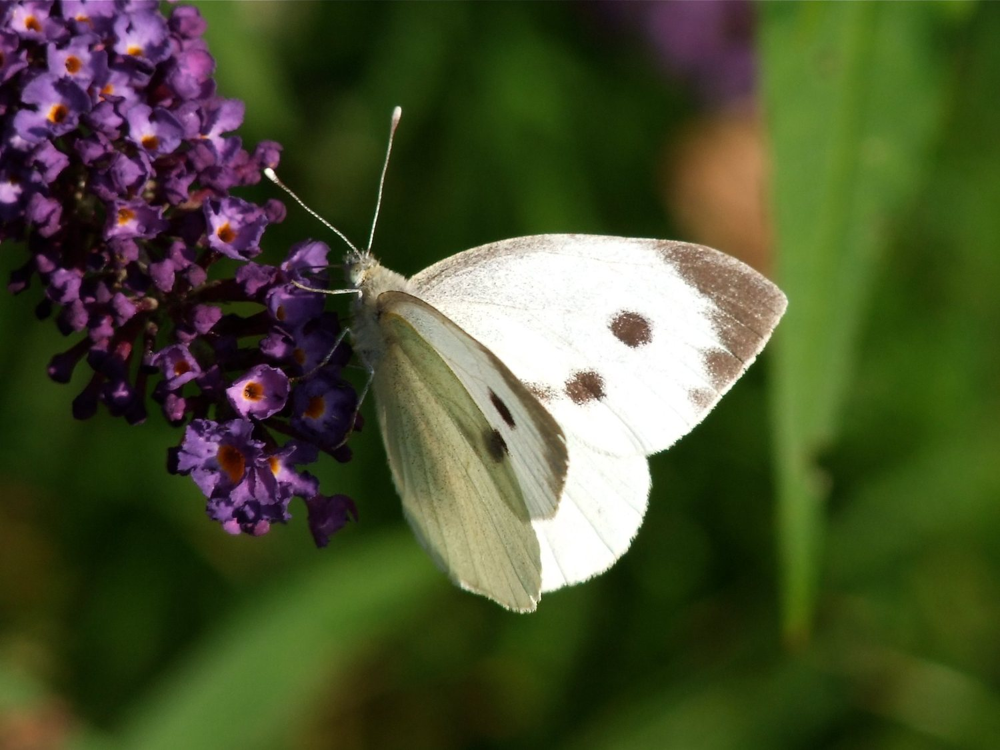

Insekten › Schmetterlinge › Tagfalter › Weißlinge

Pieris brassicae

Foto: Michael Baur · Olympus OM-5 · CC BY-NC
Der Große Kohlweißling ist wohl der bekannteste – und gefürchtetste – Tagfalter in deutschen Gemüsegärten. Seine Raupen können einen Kohlkopf in wenigen Tagen auf ein Gerippe reduzieren. Und doch: Als Falter ist er ein anmutiges Wesen. Das Weiß seiner Flügel mit den schwarzen Spitzen und Punkten leuchtet im Sonnenschein, und an Blüten saugend ist er schlicht schön – nur nicht im Kohl.
Die Raupen des Großen Kohlweißlings sind unverkennbar: leuchtend gelb-grün mit schwarzen Punkten und einem gelben Längsstreifen. Sie fressen immer in Gruppen und sind daher leicht zu entdecken – und zu entfernen. Ihr auffälliges Aussehen ist keine Tarnung, sondern eine Warnung: Die Raupen speichern Senfölglykoside aus den Kohlpflanzen und sind dadurch für viele Vögel ungenießbar.
Im Garten gibt es oft Verwirrung: Neben dem Großen Kohlweißling fliegen auch Kleiner Kohlweißling und Grünader-Weißling – und sie sehen sich ähnlich. Das sicherste Merkmal ist die Größe und die breiten schwarzen Flügelspitzen des Großen Kohlweißlings. Im Zweifel hilft ein Blick auf die Raupen: Die des Kleinen Kohlweißlings sind einfarbig grün und leben einzeln versteckt im Blattinneren.
Texte und Bilder aus der Broschüre „Schmetterlinge im Ebsdorfergrund“ (Michael Baur), 1:1 übernommen · Fotos CC BY-NC, Illustrationen im Stil klassischer Lehrtafeln. Die Artseite ist der gemeinsame Endpunkt von Bestimmungsschlüssel und Stammbaum.